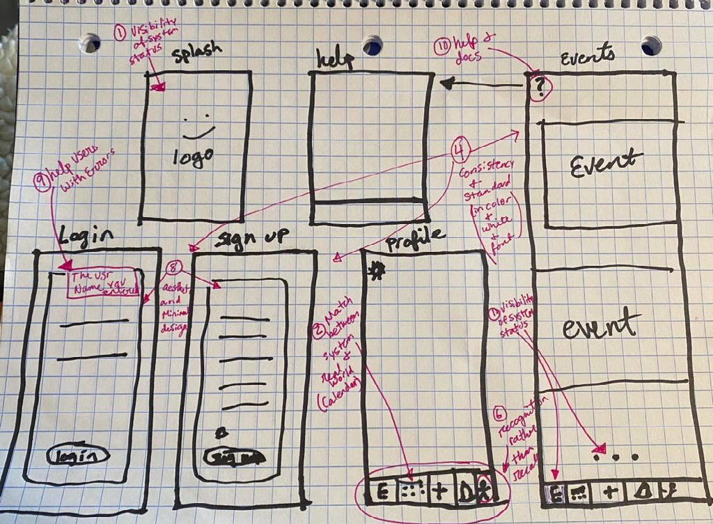
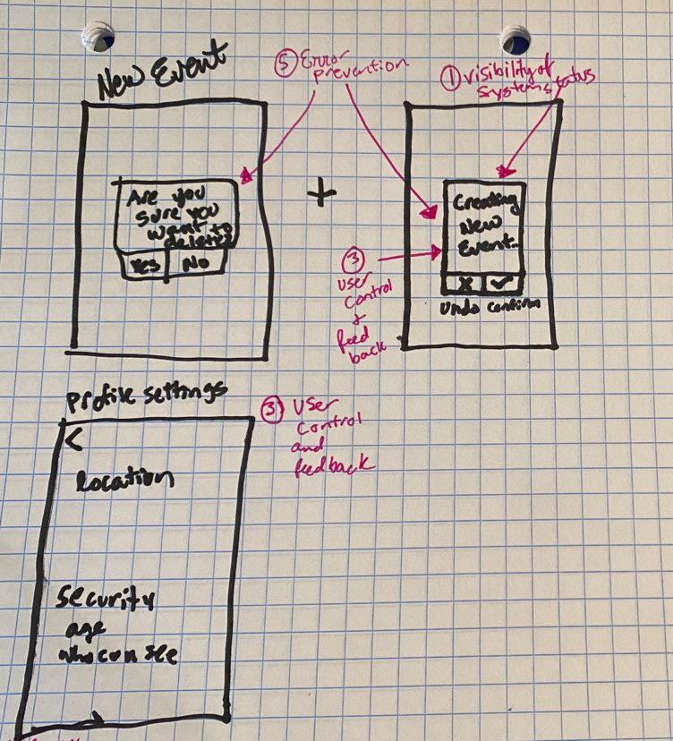
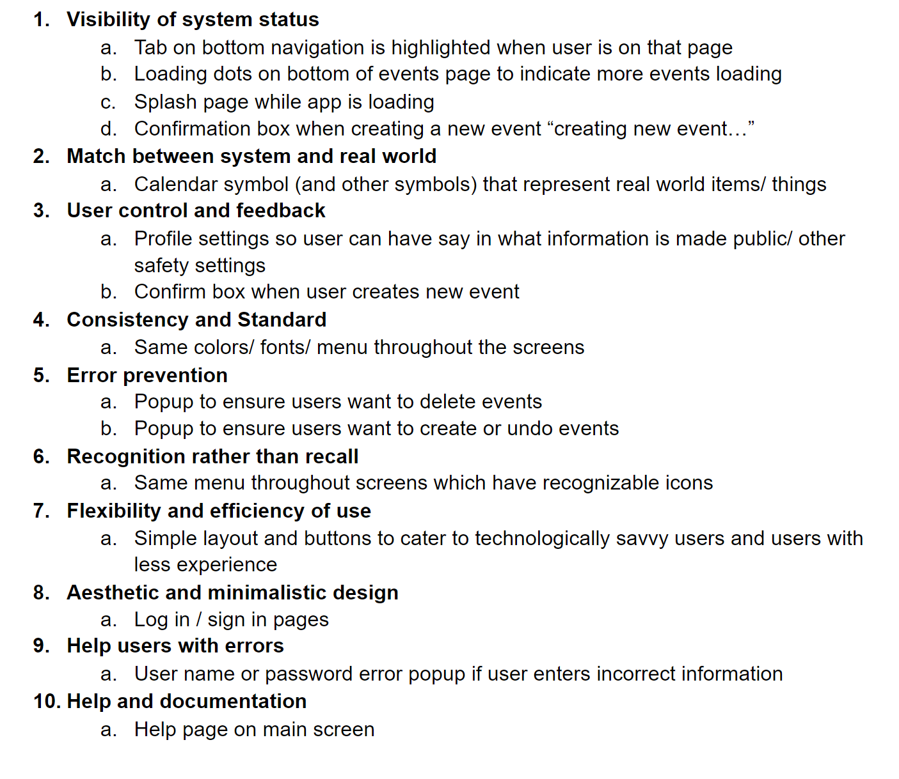
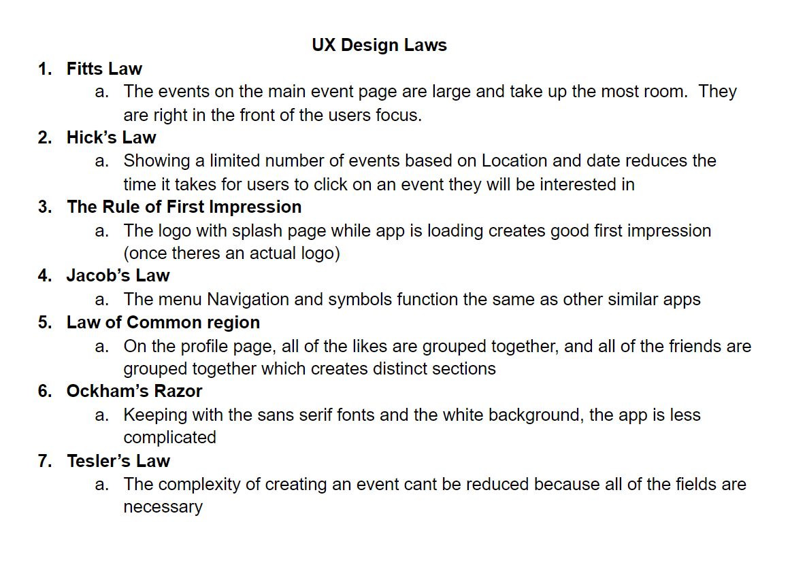
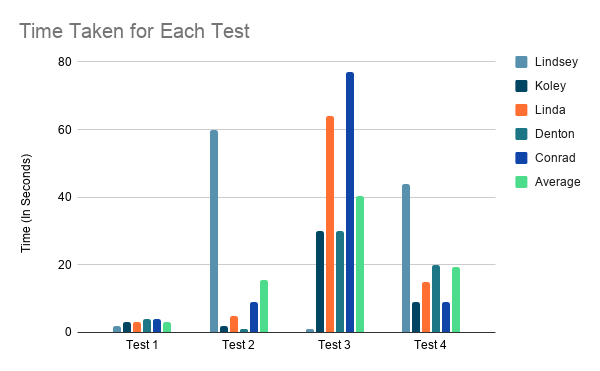

UX DESIGN
Tools
Adobe XD • Adobe Premiere • Adobe Spark
Design
PHASE ONE: EMPATHIZE
We started this project by coming up with an idea. We wanted to make a way for people to connect and interact in person without having to deal with traditional social media. We selected five participants for an interview. Their ages ranged from 22 to 35 and there was an even split of 3 male and 3 female participants. From these interviews, we determined there was an even split of interest throughout the age groups and we got an idea of how each individual would use the app.
PHASE TWO: DEFINE
To define our users' needs we created two personas. One was a younger male who was interested in social situations and more extroverted. He would be the user who would download the app to find something to do (such as a public event) with his friends. Our next persona was a middle-aged woman who was less social but wanted to have an app to easily gather her friends in an organized way. These two personas allowed us to think of all of the functionality for these two different types of potential users.
PHASE THREE: IDEATE
For this phase, we mapped out all of the features we wanted our app to have. We also mapped out how features of the app would relate to each other. This step allowed us to focus on what we wanted to include and what we wanted to leave out of our app to ensure it did not become too complicated.
PHASE FOUR: PROTOTYPE
First, we started by transforming our mind map from phase three into a series of basic drawings that laid out what we would like our app to look like and how we would like it to function.


Next, we took these drawings and compared them to UX design Laws and Heuristics to see that we followed the laws and that our app met the basic design requirements.


Finally, we created a more advanced and interactive prototype in Adobe XD. We added the features we designed from our mind map and basic sketches.

PHASE FIVE: TEST
For the final phase of this project, we tested our Adobe XD prototype on five participants. We asked each participant who had never seen the prototype before to perform a series of tasks. The tasks were: "create a new event", "find an event that interests you", "Add something you like to do to your profile", "edit your location and safety settings", and "any general feedback about the design". We timed these tasks and recorded the data.

From this data and participant feedback, we were able to make conclusions about the design of our prototype. We need to look at making it easier to add a thing you like to do to your profile and make it easier to edit your location and safety settings. These were tests 3 and 4 and had the highest average time for the participants. From the feedback, we also concluded that we should change the icon that represents all of the events into a home button, as well as other stylistic and functional changes.